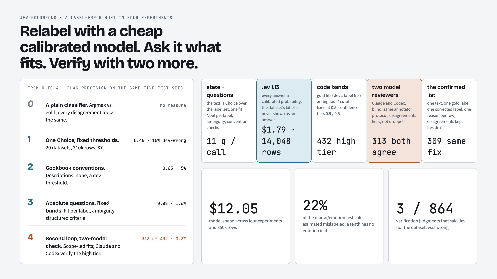
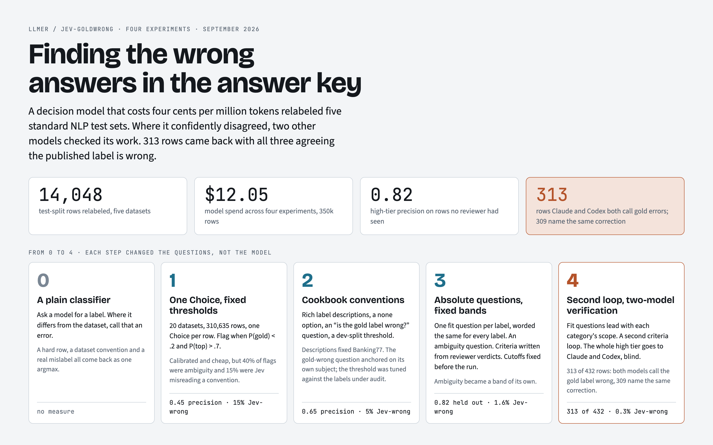
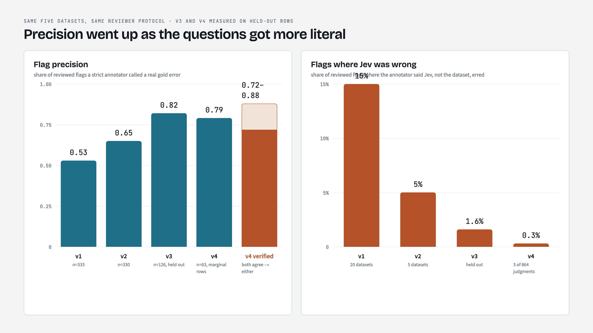
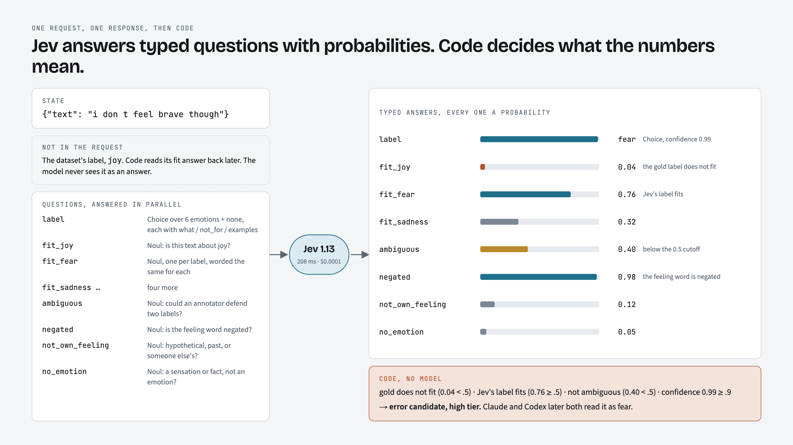
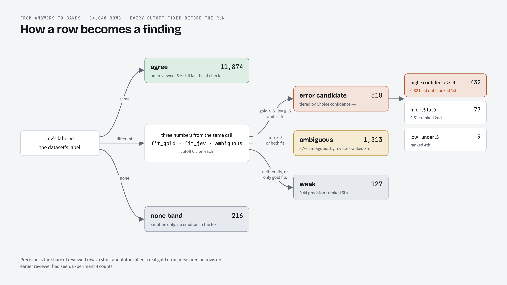
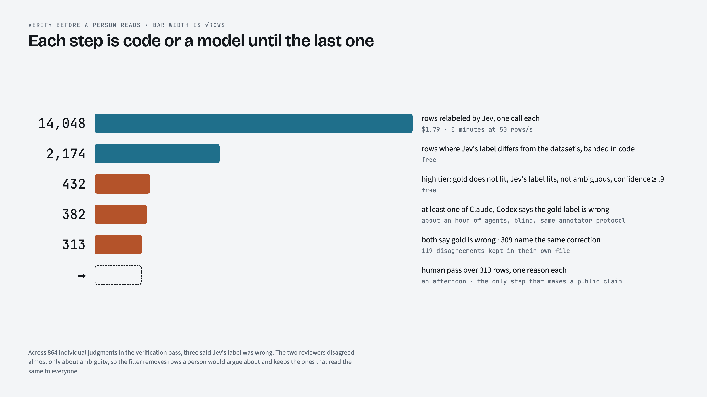
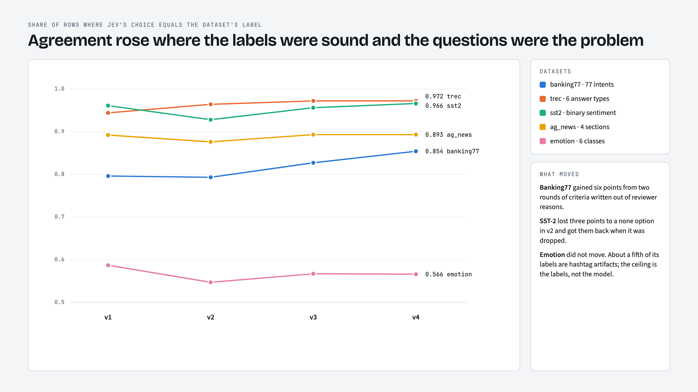
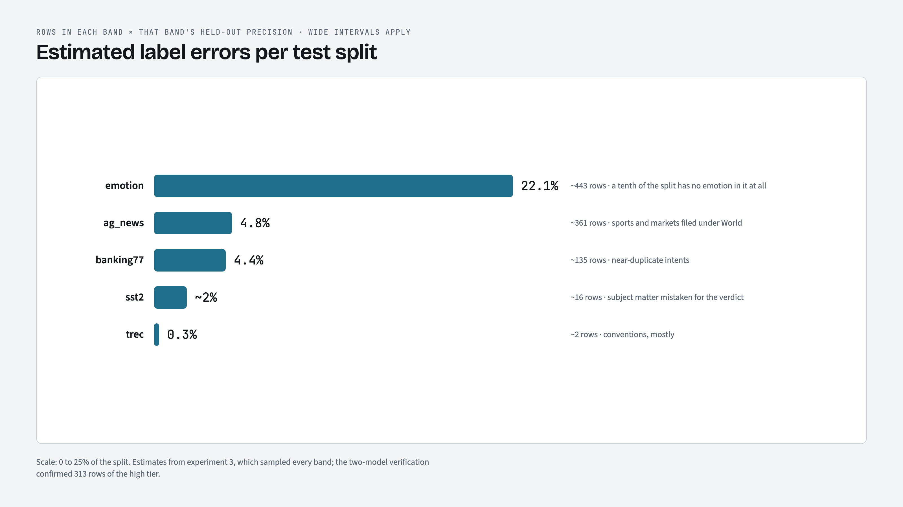
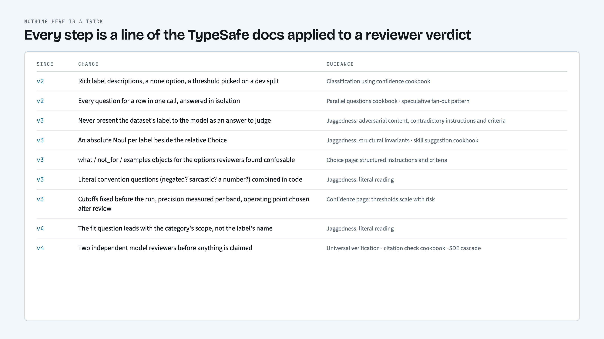

llmer / jev-goldwrong · four experiments · September 2026
Finding the wrong answers in the answer key
A decision model that costs four cents per million tokens relabeled five standard NLP test sets. Where it confidently disagreed, two other models checked its work. 313 rows came back with all three agreeing the published label is wrong.
$12.05model spend across four experiments and 350k rows
0.82high-tier precision on rows no reviewer had seen
313rows Claude and Codex both call gold errors, ready for a human
The story in one frame
Relabel with a cheap calibrated model. Ask it what fits. Verify with two more. Then read. Each experiment changed the questions, never the model; every change came from a page of the TypeSafe docs read against the previous round's reviewer verdicts.

Flag precision on the same five test sets rose from 0.45 to 0.82 while the share of flags where Jev was wrong fell from 15% to 0.3%.
From 0 to 4

Stage 0 is what most people would do first: ask a model for a label and call disagreement an error. Every later stage adds a way to tell a hard row, a dataset convention, and a real mislabel apart.

v3 and v4 are measured on rows no earlier reviewer saw. The red bracket is the v4 two-model verification of the whole high tier, from both-agree to either-agrees.
One request, one response, then code
Jev answers typed questions with probabilities and nothing else. The text goes in as state, every question the workflow might need goes in the same call, and code decides what the numbers mean. The dataset's own label is never shown to the model as an answer; it only picks which fit answer code reads back.

"i don t feel brave though" is labeled joy in the dataset. Jev: fear at 0.99, joy fits at 0.04, fear fits at 0.76, negated at 0.98. Both verifiers later read it as fear.
How a row becomes a finding
Four numbers from one call decide the band. No cutoff was tuned against the labels under audit: 0.5 on every yes/no answer and the Confidence page's 0.9 and 0.5 tiers on the Choice. Precision is measured per band afterwards, and the queue is read top down.

The error-candidate band needs the gold label to fail its own fit check and Jev's label to pass, with ambiguity under 0.5. Its high tier is what goes to verification.
Verify before a person reads
The docs describe Jev as a verifier for other models' output. Experiment 4 turns that on the pipeline itself: the 432 high-tier rows went blind to fresh Claude agents and to Codex under the same annotator protocol. The two disagree almost only about ambiguity, never about Jev being wrong.

Across 864 individual judgments, three said Jev's label was wrong. The 119 rows the two models split on are kept as a disagreement file, not dropped.
What moved, per dataset

Banking77 gained six points from two rounds of criteria written out of reviewer reasons. Emotion did not move; about a fifth of its labels are hashtag artifacts.

Band counts times held-out band precision. On Emotion, the none band alone holds about 195 rows with no emotion in the text.
Which page shaped which change

Nothing here is a trick. Every step is a line of the documentation applied to a reviewer verdict.